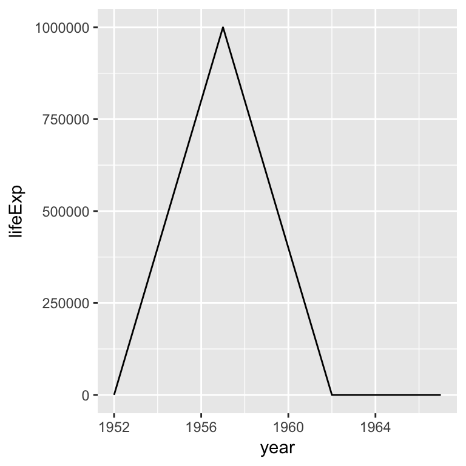
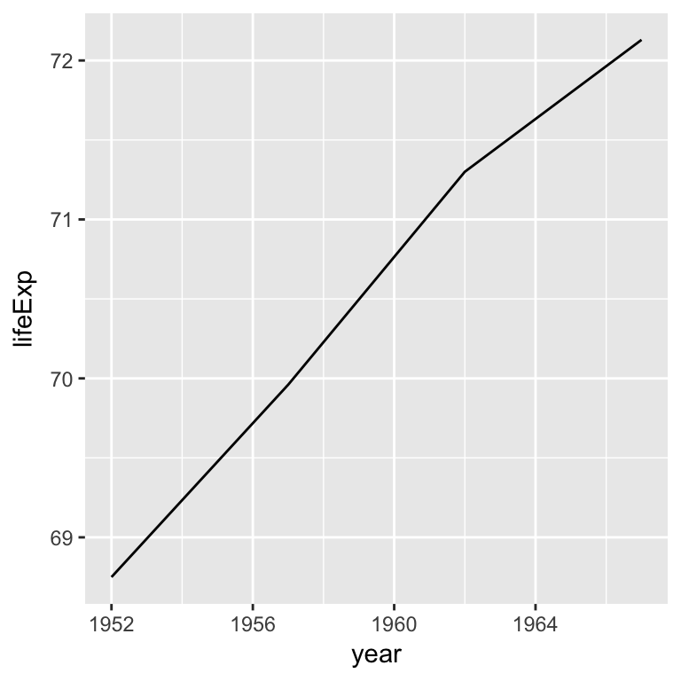
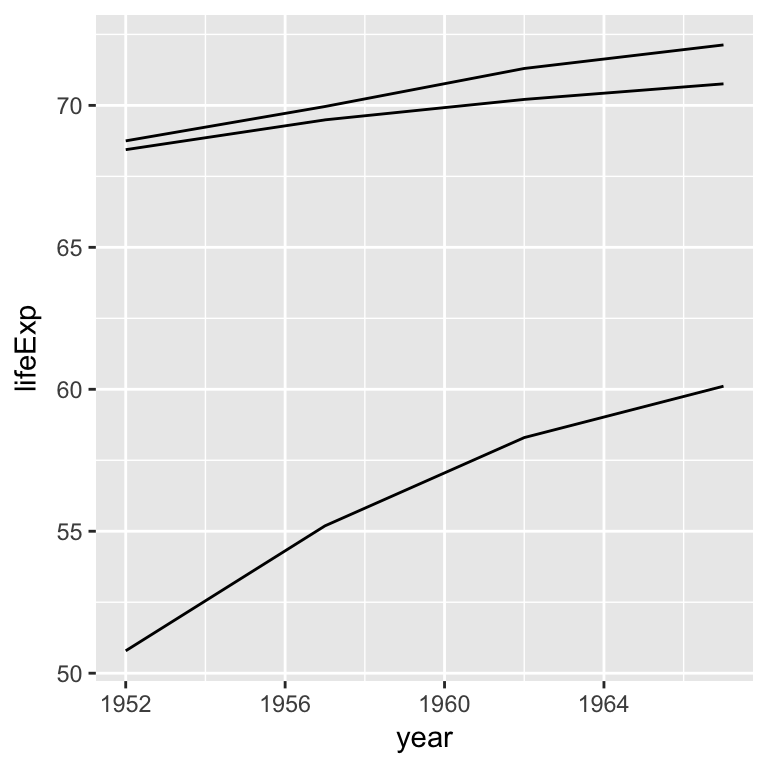
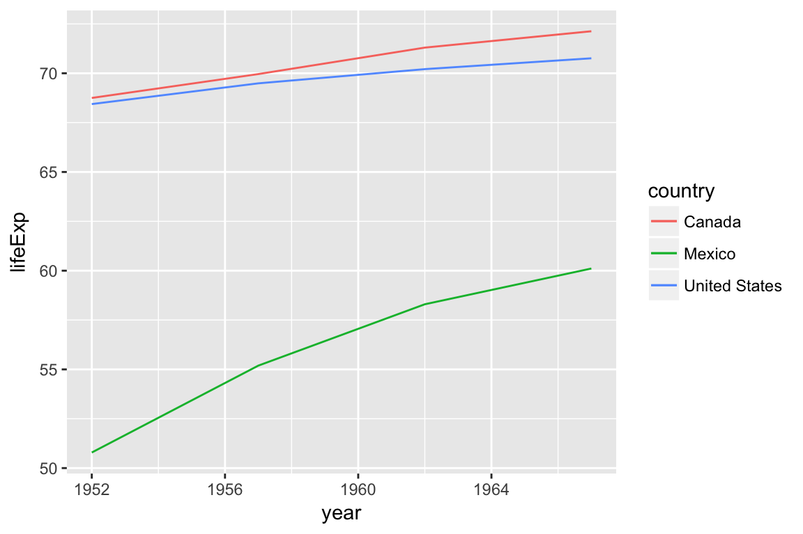

Heike Hofmann
We are asked to :
999999, it should actually be 69.96. Make this correction.Using the gapminder data provided
life5060 <- read.csv("https://raw.githubusercontent.com/Stat480-at-ISU/materials/master/01_collaborative-environment/data/gapminder-5060.csv")
head(life5060)## country continent year lifeExp pop gdpPercap
## 1 Afghanistan Asia 1952 28.801 8425333 779.4453
## 2 Afghanistan Asia 1957 30.332 9240934 820.8530
## 3 Afghanistan Asia 1962 31.997 10267083 853.1007
## 4 Afghanistan Asia 1967 34.020 11537966 836.1971
## 5 Albania Europe 1952 55.230 1282697 1601.0561
## 6 Albania Europe 1957 59.280 1476505 1942.2842canada <- life5060 %>% filter(country == "Canada")
head(canada)## country continent year lifeExp pop gdpPercap
## 1 Canada Americas 1952 68.75 14785584 11367.16
## 2 Canada Americas 1957 999999.00 17010154 12489.95
## 3 Canada Americas 1962 71.30 18985849 13462.49
## 4 Canada Americas 1967 72.13 20819767 16076.59Draw a line for the life expectancy in Canada
canada %>%
ggplot(aes(x = year, y = lifeExp)) +
geom_line()
canada %>% filter(year == 1957)## country continent year lifeExp pop gdpPercap
## 1 Canada Americas 1957 999999 17010154 12489.95canada_fixed <- canada %>% mutate(
lifeExp = replace(lifeExp, year==1957, 69.96)
)canada_fixed %>% ggplot(aes(x = year, y = lifeExp)) +
geom_line()
Add lines for Mexico and the US
canada_fixed %>%
ggplot(aes(x = year, y = lifeExp, group=country)) + geom_line() +
geom_line(data = life5060 %>%
filter(country %in% c("United States", "Mexico")))
Add lines for Mexico and the US, color lines by country and add a legend
canada_fixed %>%
ggplot(aes(x = year, y = lifeExp, colour=country)) + geom_line() +
geom_line(data = life5060 %>%
filter(country %in% c("United States", "Mexico")))
01_collaborative-environment and download the file 02_test-case-solution.Rmd